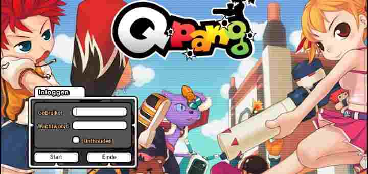
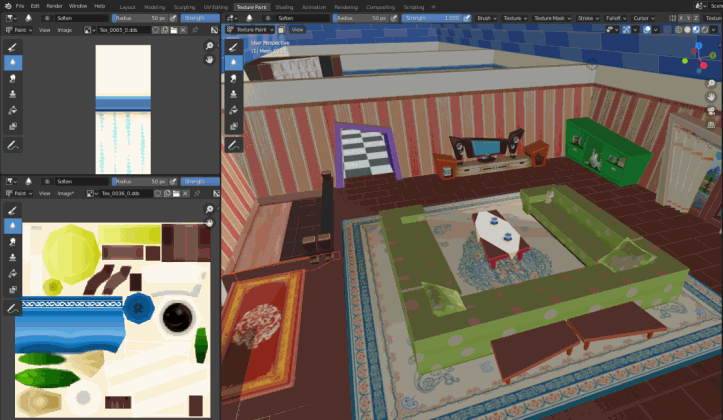

AnimeShooter Blog06/08/2021
~ Ferib Hellscream
Developing a Private Game Server
About a couple of months ago, I started developing a private server for a popular game. While I had some excellent progress making a server from scratch, I ended up getting a private investigator at my doorstep, which handed me over a cease and desist letter. It was at that moment I knew, I fucked up.
Despite all the hard work I put into the project, it would never be able to see the daylight, or at least not without facing a lawsuit. But instead of throwing all my work in the garbage, I have decided to fork the core components of my project and have them re-used in my new private server project, AnimeShooter!
What is AnimeShooter?
Before I tell you what AnimeShooter is, let me tell you what MangaFigher is. MangaFigher was a Korean multiplayer online third-person shooter game developed by 'OnNet' and hosted by 'GamesCampus'. There was also another variant called 'Qpang' which was hosted by 'Realfogs', Qpang was most popular in The Netherlands and was later on translated to English and German.

With that said, AnimeShooter is a private server based on the Qpang game client. The original games MangaFighter and Qpang have died in 2010 and 2013 accordingly. My focus here is to resurrect the old game while learning a thing or two about game development, I noticed that big gaming companies do this too, so why not rip off some people myself and get a few bucks along the way... except, I don't have the source code of the game nor do I charge 50 bucks for a copy (AnimeShooter will be free 2 play).
Reversing the game
Developing a game server for a game without any technical understanding of how the game works is nearly impossible. Therefore we need to get a very good understanding of how exactly the game works and, most importantly, figure out how the network communication works.
Network Protocol
Reverse engineering the network protocol of the game is the most important step to succeed in developing a private game server for whatever game you want. In our case, we have reversed the Qpang client and found out the game uses both TCP and UDP. For those who are not familiar with UDP, it's a real pain in the ass.
To be more specific, the UDP is implemented using the openTNL library, a library that doesn't seem to be very popular, yet I managed to find a C# implementation of the openTNL library (thanks, Blumster!), which we will be using later on.
Game Resources
One of the things I hope to do after creating a working game server is to add new content to the game. Most games store their resources on disk where they are ready to be used whenever the game gets launched. Once a game launches it will almost always load these resources into memory and then proceed to use those resources to construct their virtual environment for the actual game.

These resources are often compressed and/or packed to minimize their disk usage, which means the game has to decompress and/or unpack the resources first. Some games tend to use custom packing techniques while others prefer using a more wide-used compression algorithm.
Either way, we will have to figure out what kind of compression/packing is used to modify the resources that came shipped with our game. We will soon see how Qpang loads textures, map objects, scripts, and configuration files through different algorithms.
The Game Server
After most of the reversing is done and a decent amount of knowledge is obtained we can start developing the actual game server. Qpang used to have both PvP and PvE content, the PvP content is just playing against each other in a handful of different game modes using a wide variety of weapons, clothes, and characters.
PvE is a different story, here the players had to team up with a maximum amount of 4 players while facing three different stages of the game. Each stage has its unique parkour, enemies, and challenges that must be solved before being able to progress to the next objective.
We noticed most of the PvE content is stored inside the client. Hopefully, we will be able to extract and reconstruct the original PvE content and provide you with a nostalgic PvE gameplay. But for now, let's focus on the PvP and see how that works out.
The server itself is programmed in C# but will be kept closed-source. However, we do plan on open-sourcing a variety of tools created during our research and we will provide a rich set of Rest APIs.
Anti-Cheating
Just to spice things up a little more I also decided to throw in anti-cheating. I have been active in a rich variety of so-called 'cheating' communities that focus on automating gameplay, glitching, exploiting game mechanics, developing cheats, reversing anti-cheating, defeating anti-debugging, duplicating in-game items, and a lot of other things.
Therefore it would be nice to switch sides and figure out techniques to defend against such things based on the knowledge I have gathered over the years.
What is next?
This is it, for now. I hope you have obtained a good overview of what is yet to come and hopefully you will be around to see the evolution of AnimeShooter, turning into an interactive and educative project for both of us!
~ Our Discord: https://discord.gg/dB6bpUedHm